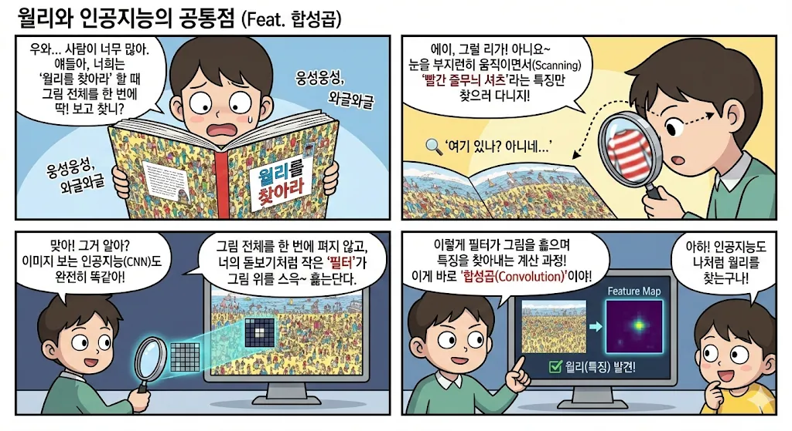
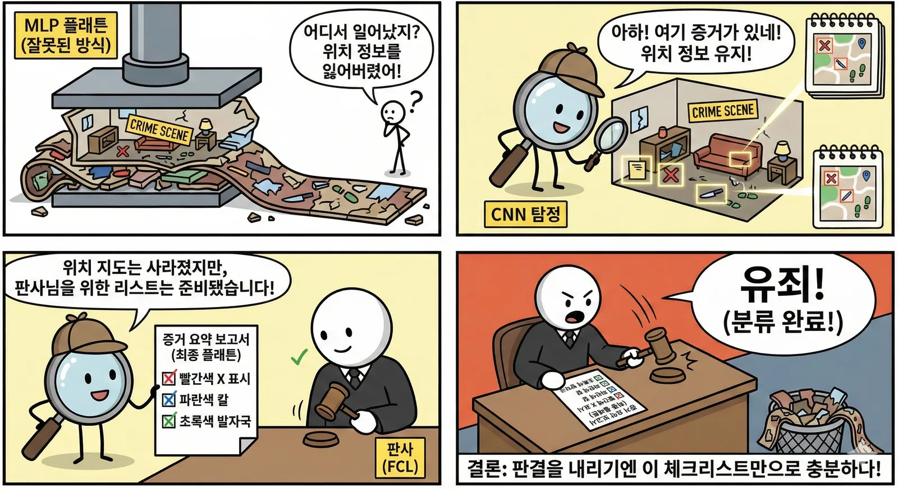
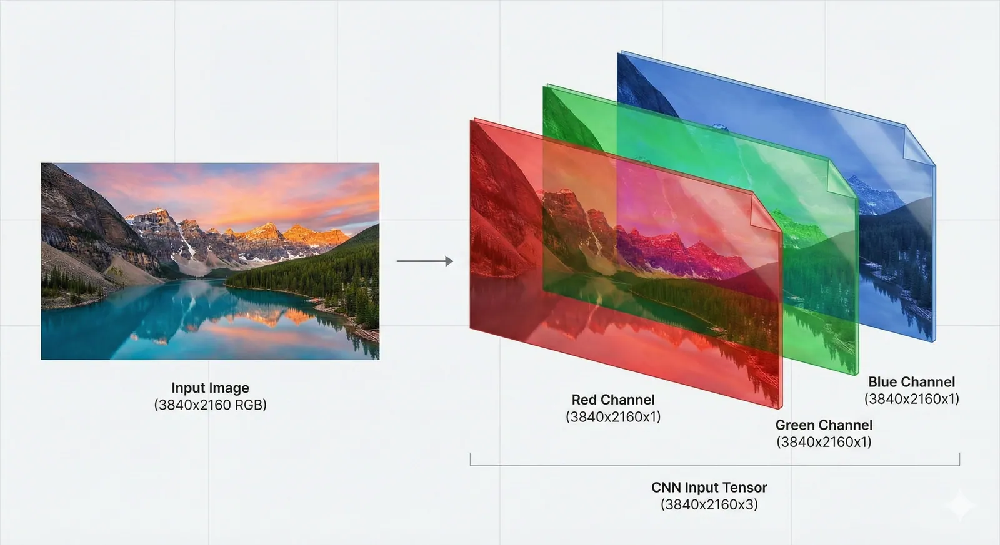

배 사진에서 단서 찾기
사람의 눈처럼 배(Boat) 사진을 보면서 “물결이 있네?”라고 단서(feature)를 찾는 과정입니다.
Part 2 · Visual Intelligence
MLP는 그림을 한 줄로 펴면서 위치와 모양의 관계를 잃습니다. CNN은 작은 영역을 훑으며 주변 픽셀의 패턴을 찾고, 이미지의 공간 구조를 더 오래 보존합니다.
The Birth of CNN · S59
복잡한 그림 전체를 한꺼번에 보는 대신 작은 ‘필터’가 그림 위를 훑으며 특정 모양과 패턴을 찾습니다. 이 계산이 합성곱(Convolution)입니다.

MLP vs CNN · S60
원본 비교표의 네 항목처럼 MLP는 픽셀을 낱개 숫자로 보고, CNN은 주변 픽셀이 만드는 모양과 위치 관계를 봅니다.
| 구분 | MLP | CNN |
|---|---|---|
| 보는 방식 | 그림을 잘라서 한 줄로 폄 | 그림 모양 그대로 봄 |
| 정보 처리 | 픽셀 하나하나의 값만 봄 | 픽셀 주변의 패턴(모양)을 봄 |
| 특징 | 위치가 조금만 바뀌어도 못 알아봄 | 위치가 바뀌어도 잘 알아봄 |
| 비유 | 난도질된 퍼즐 조각 | 손전등으로 훑어 보기 |
MLP는 글자나 숫자를 분석하는 데는 천재이지만, 그림을 볼 때는 융통성이 없는 샌님입니다. 그래서 그림의 모양과 패턴을 사람처럼 알아보는 시각 전문 AI인 CNN이 탄생했습니다.
Feature Extraction · S61
CNN 앞부분은 이미지를 돋보기로 훑어 가며 “어떤 모양이 있는지” 핵심 정보를 뽑아냅니다.
사람의 눈처럼 배(Boat) 사진을 보면서 “물결이 있네?”라고 단서(feature)를 찾는 과정입니다.
도해에서 그림이 점점 작아지는 것은 불필요한 배경을 버리고 알짜배기 핵심 정보를 압축한다는 뜻입니다.

Classification · S62
뒷부분은 앞에서 찾아낸 단서들을 모아 “그래서 이게 뭐야?”라고 판단합니다. Fully Connected 층은 곧 MLP입니다.
물결, 윤곽선, 질감처럼 이미지 안의 특징을 찾습니다.
눈이 찾은 단서들을 판별하기 쉬운 한 줄 체크리스트로 바꿉니다.
“이런 모양이 있는 걸 보니 이건 배야!”라고 결론을 내립니다.
Why Flatten Again? · S63
마지막 Flatten은 그림을 망가뜨리는 과정이 아니라 ‘공간 정보’를 판결에 필요한 ‘의미 정보’, 즉 체크리스트로 바꾸는 과정입니다.
눈이 얼굴 왼쪽 끝에 있든 오른쪽 끝에 있든 ‘눈이 있다’는 사실이 리스트에 적히면, AI는 “이건 사람 얼굴이네”라고 판단할 수 있습니다.

Input Layer · S64
입력층은 이미지 데이터가 최초로 거치는 계층입니다. 단순한 1차원이 아니라 높이·너비·채널을 가진 3차원 데이터로 받습니다.
높이 28, 너비 28, 밝기 채널 1개입니다.
높이와 너비에 빨강·초록·파랑 채널 3개가 쌓입니다.

Quick Check
답을 고르면 바로 해설이 나타납니다.
답을 고르면 바로 해설이 나타납니다.